Plot the statistics of the cells.
Usage
CellStatPlot(
object,
ident = "seurat_clusters",
group_by = NULL,
group_by_sep = "_",
split_by = NULL,
split_by_sep = "_",
facet_by = NULL,
rows = NULL,
columns_split_by = NULL,
frac = c("none", "group", "ident", "cluster", "all"),
rows_name = NULL,
name = NULL,
plot_type = c("bar", "circos", "pie", "pies", "ring", "donut", "trend", "area",
"sankey", "alluvial", "heatmap"),
swap = FALSE,
ylab = NULL,
...
)Arguments
- object
A Seurat object
- ident
The column with the cell identities. i.e. clusters. Default: seurat_clusters For 'pies', this will be used as the
pie_group_by. For 'heatmap' plot, this will be used as the rows of the heatmap.- group_by
The column name in the meta data to group the cells. Default: NULL This should work as the columns of the plot_type: heatmap.
- group_by_sep
The separator to use when combining multiple columns in
group_by. Default: "_" For 'sankey'/'heatmap' plot, multiple columns will not be combined, and each of them will be used as a node.- split_by
The column name in the meta data to split the cells. Default: NULL Each split will be plotted in a separate plot.
- split_by_sep
The separator to use when combining multiple columns in
split_by. Default: "_"- facet_by
The column name in the meta data to facet the plots. Default: NULL Not available for 'circos', 'sankey', and 'heatmap' plots.
- rows
The column names in the data used as the rows of the 'pies' (heatmap with cell_type = 'pie'). Default: NULL. Only available for 'pies' plot. The values don't matter, and they only indicate the cells overlapping with the columns and distributed in different
identvalues.- columns_split_by
The column name in the meta data to split the columns of the 'pies'/'heatmap' plot. Default: NULL
- frac
The way of calculating the fraction. Default is "none". Possible values are "group", "ident", "cluster", "all", "none". Note that the fractions are calculated in each split and facet group if
split_byandfacet_byare specified.group: calculate the fraction in each group. The total fraction of the cells of idents in each group will be 1. When
group-byis not specified, it will be the same asall.ident: calculate the fraction in each ident. The total fraction of the cells of groups in each ident will be 1. Only works when
group-byis specified.cluster: alias of
ident.all: calculate the fraction against all cells.
none: do not calculate the fraction, use the number of cells instead.
- rows_name
The name of the rows in the 'pies'/'heatmap' plot. Default is NULL.
- name
The name of the 'pies'/'heatmap' plot, shown as the name of the main legend. Default is NULL.
- plot_type
The type of plot to use. Default is "bar". Possible values are "bar", "circos", "pie", "pies", "ring"/"donut", "trend", "area", "heatmap", and "sankey"/"alluvial". 'pie' vs 'pies': 'pie' plot will plot a single pie chart for each group, while 'pies' plot will plot multiple pie charts for each group and split. 'pies' basically is a heatmap with 'cell_type = "pie"'.
- swap
Whether to swap the cluster and group, that is, using group as the x-axis and cluster to fill the plot. For circos plot, when transposed, the arrows will be drawn from the idents (by
ident) to the the groups (bygroup_by). Only works whengroup_byis specified. For 'pies' plot, this will swap the group_by and ident. For 'heatmap' plot, this will swap the group_by and columns_split_by. Note that this is different fromflip.flipis used to transpose the plot. Butswapis used to swap the x and group_by during plotting.- ylab
The y-axis label. Default is NULL.
- ...
Other arguments passed to the specific plot function.
For
barplot, seeplotthis::BarPlot.For
circosplot, seeplotthis::CircosPlot.For
piechart, seeplotthis::PieChart.For
piesplot, seeplotthis::Heatmap.For
heatmapplot, seeplotthis::Heatmap.For
ring/donutplot, seeplotthis::RingPlot.For
trendplot, seeplotthis::TrendPlot.For
areaplot, seeplotthis::AreaPlot.For
sankey/alluvialplot, seeplotthis::SankeyPlot.
Examples
library(patchwork)
data(ifnb_sub)
# Bar plot
p1 <- CellStatPlot(ifnb_sub)
p2 <- CellStatPlot(ifnb_sub, group_by = "stim")
p3 <- CellStatPlot(ifnb_sub, group_by = "stim", palette = "Set2")
p4 <- CellStatPlot(ifnb_sub, group_by = "stim", position = "stack")
(p1 | p2) / (p3 | p4)
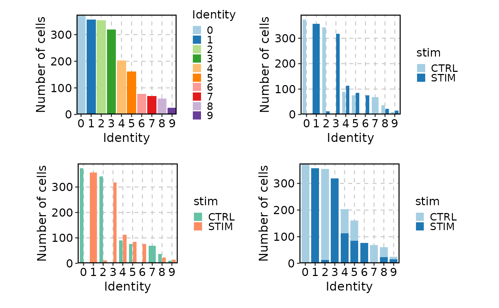
# Fraction of cells
p1 <- CellStatPlot(ifnb_sub, group_by = "stim", frac = "group",
ident = "seurat_annotations", x_text_angle = 60)
p2 <- CellStatPlot(ifnb_sub, group_by = "stim", frac = "group")
p3 <- CellStatPlot(ifnb_sub, group_by = "stim", frac = "ident",
position = "stack", alpha = .6)
p4 <- CellStatPlot(ifnb_sub, group_by = "stim", frac = "group",
swap = TRUE, position = "stack")
(p1 | p2) / (p3 | p4)
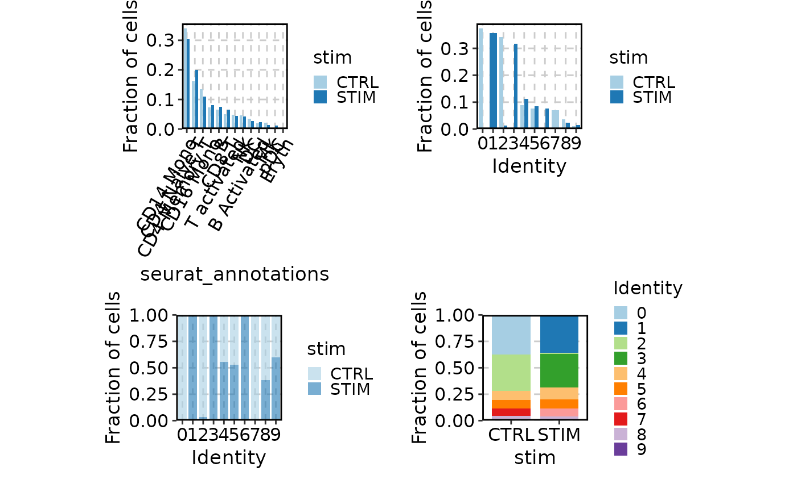
# Splitting/Facetting the plot
CellStatPlot(ifnb_sub, split_by = "stim")
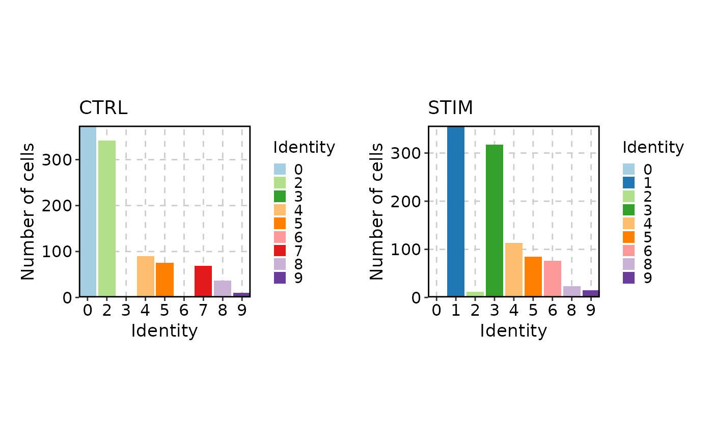
CellStatPlot(ifnb_sub, facet_by = "stim")
CellStatPlot(ifnb_sub, facet_by = "stim", facet_nrow = 2)
# Circos plot
CellStatPlot(ifnb_sub, group_by = "stim", plot_type = "circos")
#> Error in as_patch(grobs$full): The package "gridGraphics" is required to add base plots to patchworks
CellStatPlot(ifnb_sub, group_by = "stim", ident = "seurat_annotations",
plot_type = "circos", labels_rot = TRUE)
#> Error in as_patch(grobs$full): The package "gridGraphics" is required to add base plots to patchworks
# Pie plot
CellStatPlot(ifnb_sub, plot_type = "pie")
 CellStatPlot(ifnb_sub, plot_type = "pie", split_by = "stim")
CellStatPlot(ifnb_sub, plot_type = "pie", split_by = "stim")
 # Ring plot
CellStatPlot(ifnb_sub, plot_type = "ring", group_by = "stim",
palette = "Spectral")
#> 'frac' is forced to 'group' for 'ring' plot.
# Trend plot
CellStatPlot(ifnb_sub, plot_type = "trend", frac = "group",
x_text_angle = 90, group_by = c("stim", "seurat_annotations"))
#> Multiple columns are provided in 'group_by'. They will be concatenated into one column.
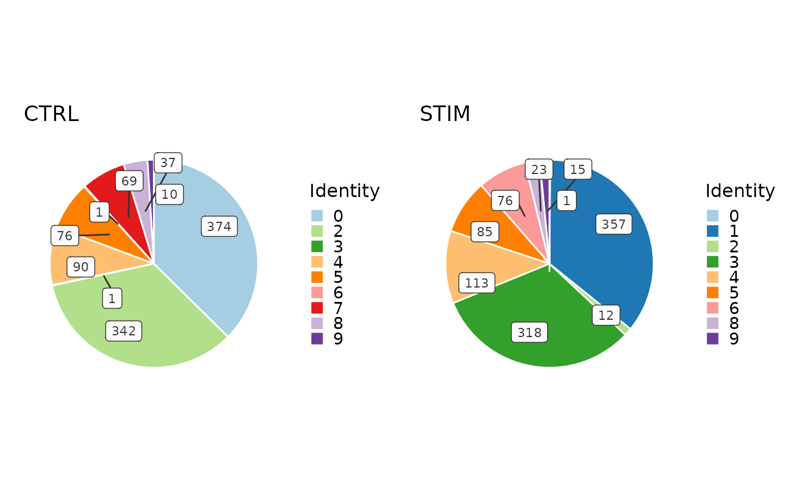
# Sankey plot
CellStatPlot(ifnb_sub, plot_type = "sankey", group_by = "stim", alpha = .6)
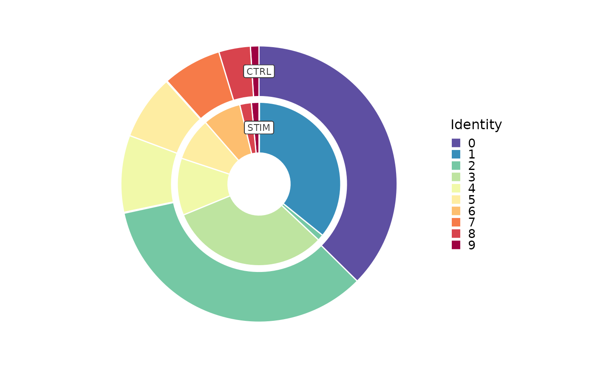
CellStatPlot(ifnb_sub, plot_type = "sankey", alpha = .6,
group_by = c("stim", "seurat_annotations", "orig.ident"))
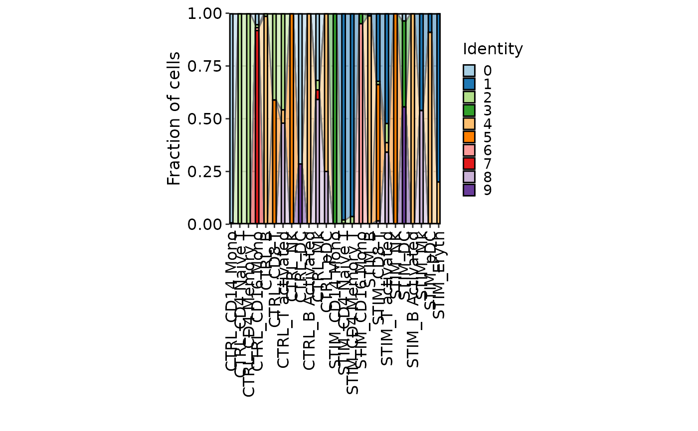
# Area plot
CellStatPlot(ifnb_sub, plot_type = "area", frac = "group", x_text_angle = 90,
group_by = "seurat_annotations", split_by = "stim")
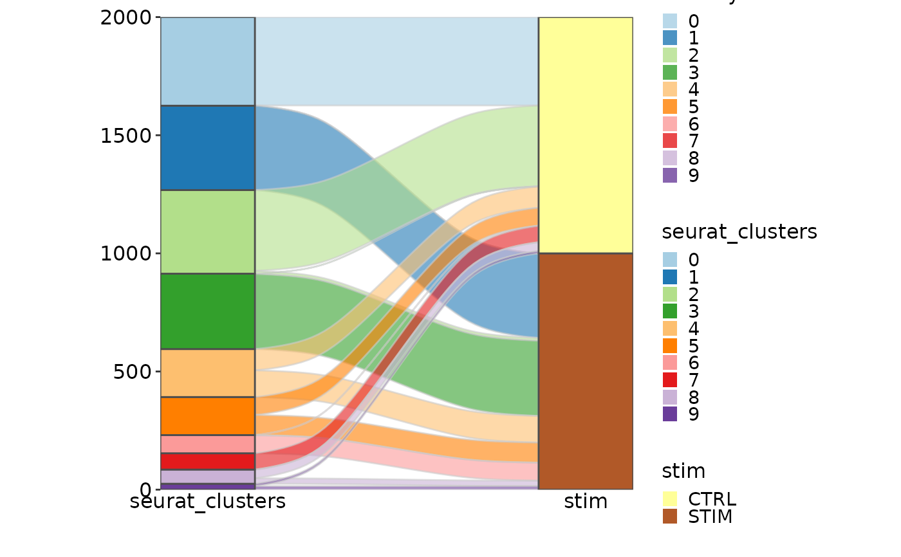
# Pies
ifnb_sub$r1 <- sample(c(1, NA), ncol(ifnb_sub), replace = TRUE)
ifnb_sub$r2 <- sample(c(1, NA), ncol(ifnb_sub), replace = TRUE)
ifnb_sub$r3 <- sample(c(1, NA), ncol(ifnb_sub), replace = TRUE)
CellStatPlot(ifnb_sub, plot_type = "pies", group_by = "stim",
rows = c("r1", "r2", "r3"), show_row_names = TRUE,
show_column_names = TRUE, column_names_side = "top", cluster_columns = FALSE,
row_names_side = "left", pie_size = sqrt)
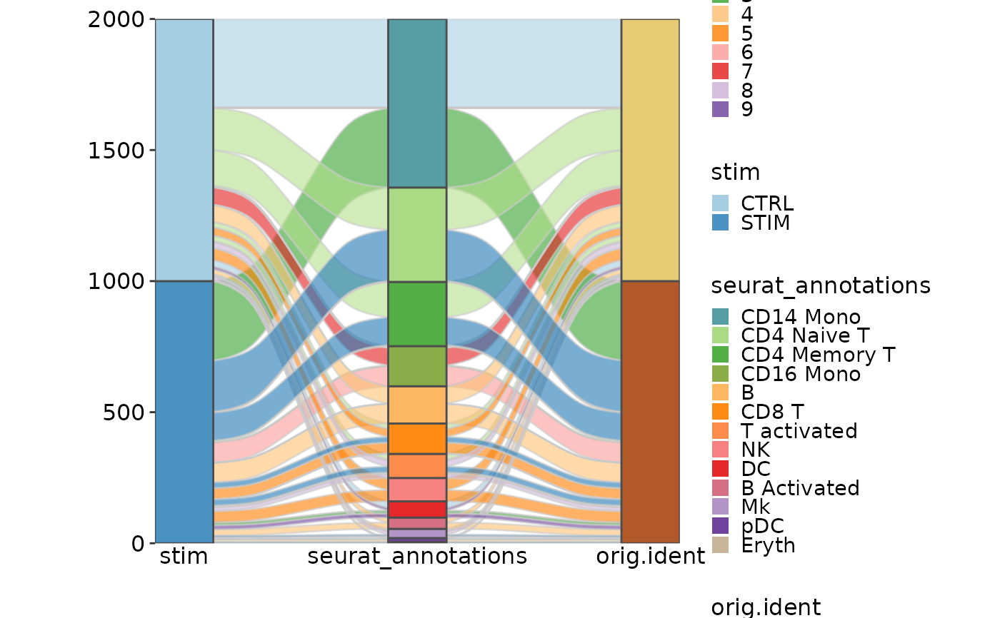
# Heatmap
CellStatPlot(ifnb_sub, plot_type = "heatmap", group_by = "stim", palette = "Blues")
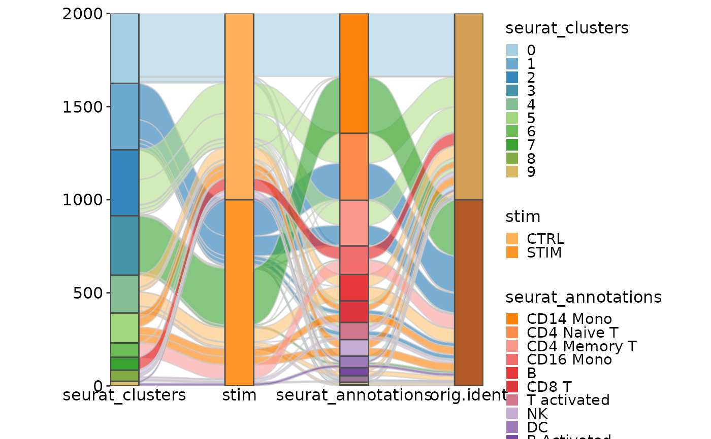
CellStatPlot(ifnb_sub, plot_type = "heatmap", group_by = "stim",
frac = "group", columns_split_by = "seurat_annotations", swap = TRUE)
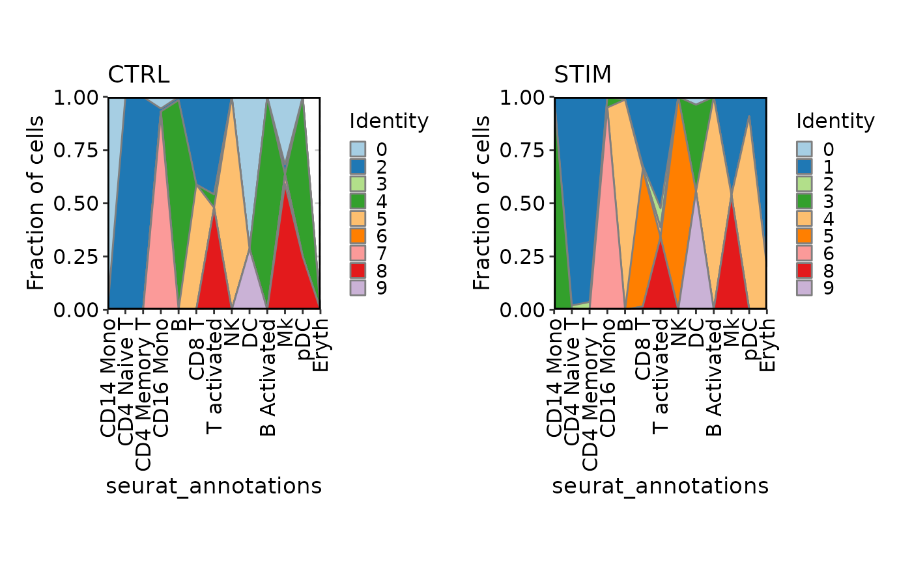
# Ring plot
CellStatPlot(ifnb_sub, plot_type = "ring", group_by = "stim",
palette = "Spectral")
#> 'frac' is forced to 'group' for 'ring' plot.
# Trend plot
CellStatPlot(ifnb_sub, plot_type = "trend", frac = "group",
x_text_angle = 90, group_by = c("stim", "seurat_annotations"))
#> Multiple columns are provided in 'group_by'. They will be concatenated into one column.
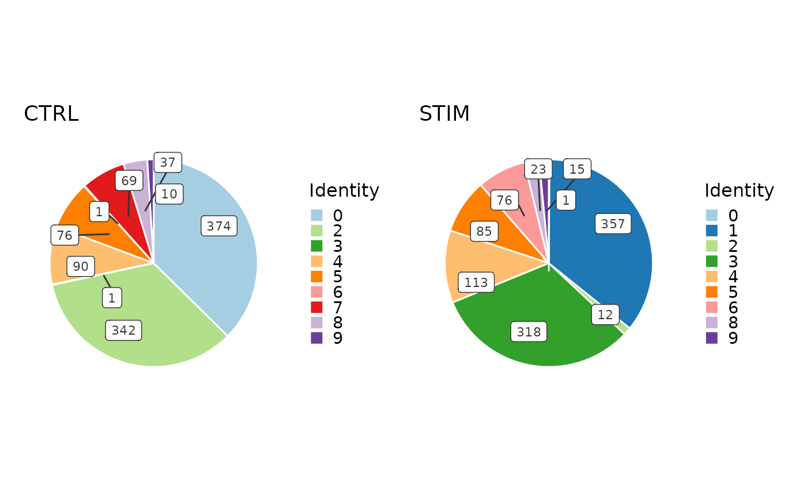
# Sankey plot
CellStatPlot(ifnb_sub, plot_type = "sankey", group_by = "stim", alpha = .6)
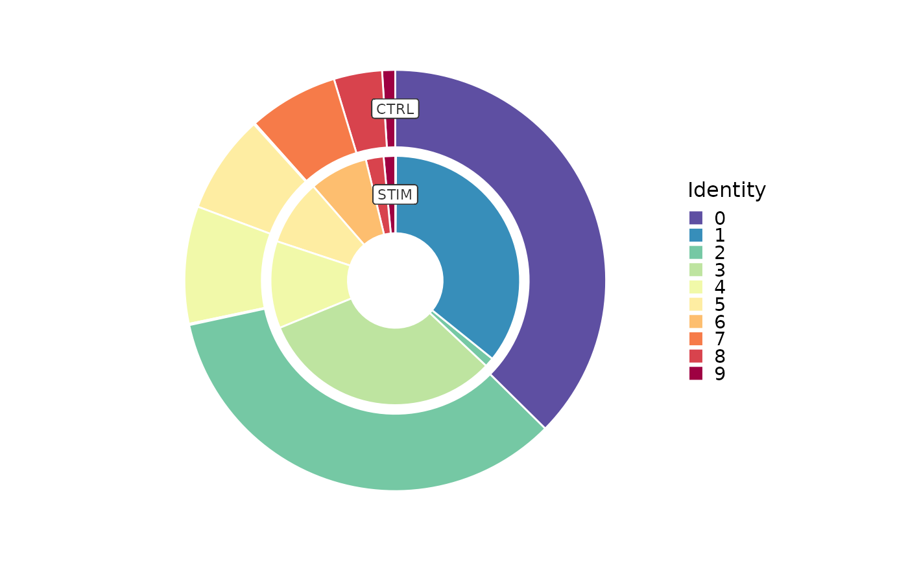
CellStatPlot(ifnb_sub, plot_type = "sankey", alpha = .6,
group_by = c("stim", "seurat_annotations", "orig.ident"))
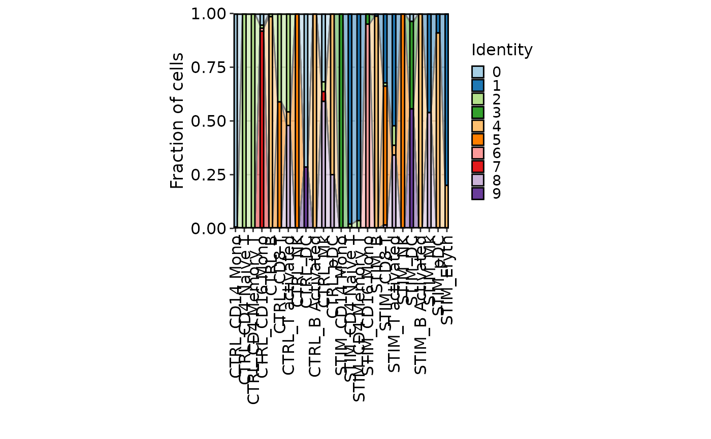
# Area plot
CellStatPlot(ifnb_sub, plot_type = "area", frac = "group", x_text_angle = 90,
group_by = "seurat_annotations", split_by = "stim")
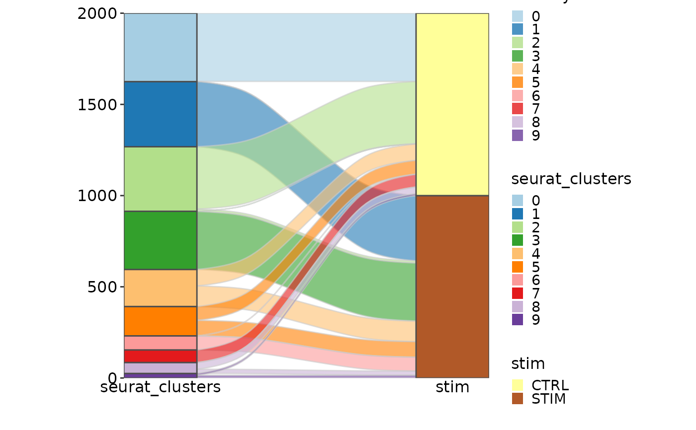
# Pies
ifnb_sub$r1 <- sample(c(1, NA), ncol(ifnb_sub), replace = TRUE)
ifnb_sub$r2 <- sample(c(1, NA), ncol(ifnb_sub), replace = TRUE)
ifnb_sub$r3 <- sample(c(1, NA), ncol(ifnb_sub), replace = TRUE)
CellStatPlot(ifnb_sub, plot_type = "pies", group_by = "stim",
rows = c("r1", "r2", "r3"), show_row_names = TRUE,
show_column_names = TRUE, column_names_side = "top", cluster_columns = FALSE,
row_names_side = "left", pie_size = sqrt)
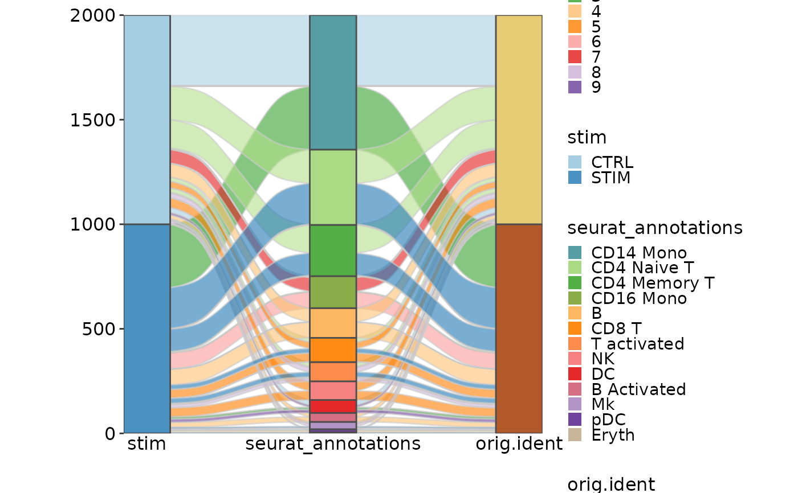
# Heatmap
CellStatPlot(ifnb_sub, plot_type = "heatmap", group_by = "stim", palette = "Blues")
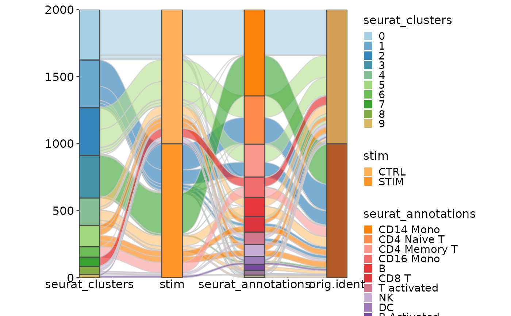
CellStatPlot(ifnb_sub, plot_type = "heatmap", group_by = "stim",
frac = "group", columns_split_by = "seurat_annotations", swap = TRUE)
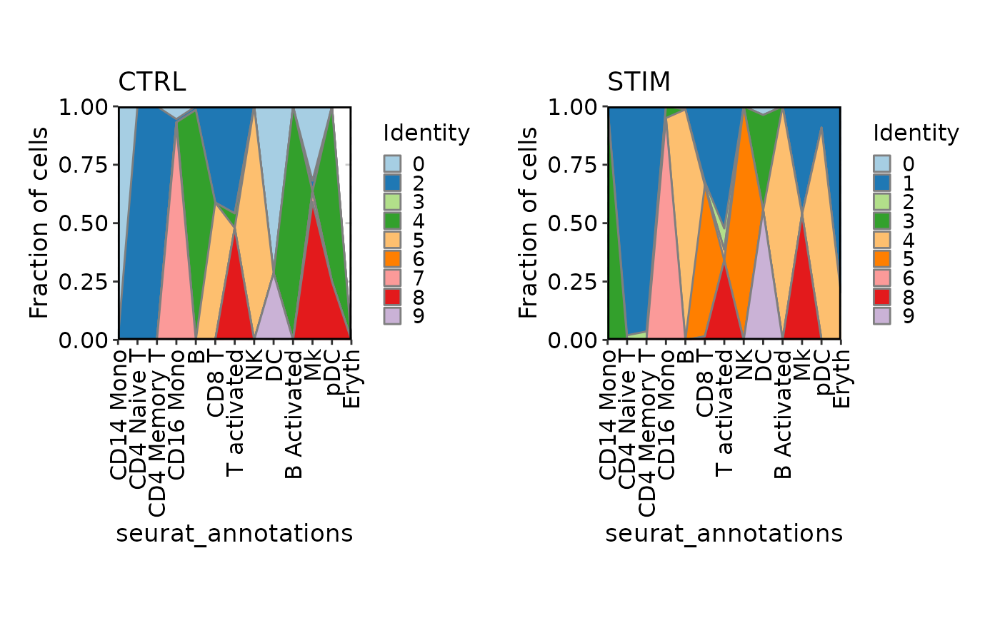